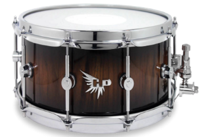
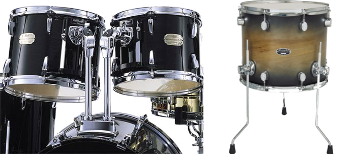
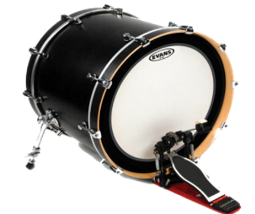
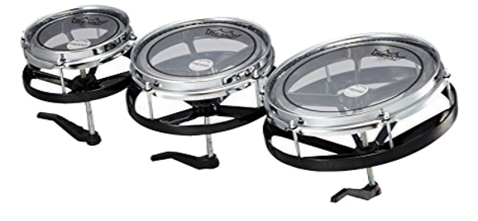

כלי הקשה : תופים
התופים הם למעשה הסיבה לקיום האתר הזה. התופים זאת המהות של האתר הזה. שם האתר שלנו Drums נקרא על שם כלי ההקשה הזה. תופים זה הלב של מערכת התופים. התופים הם כלי הקשה שהגיע אלינו עוד מימי קדם (תוכלו לסקור על כך בהרחבה בהיסטוריה ). התופים נבדלים בצליל זה מזה לפי מתיחת העור שעל התוף, על פי קוטר התוף, ועל פי הנפח של התוף. כל אלה – הם האחראים העיקריים לצליל התוף (למעט הסנר). אז הנה הם באים, סוגי התופים:
תוף סנר (Snare)
תוף בעל צליל חד וחזק. פותח במקור כתוף למצעדים צבאיים. הצליל המיוחד מושג בזכות רשת מתכת המתוחה מתחת לעורו התחתון של התוף. הוא התוף הדומיננטי ביותר במערכת תופים סטנדרטית. באמצעות רגישות עם הידיים, ועם הטכניקה – ניתן להפיק מהתוף הזה צלילים מגוונים. בדרך כלל, במערכת תופים יש תוף סנר אחד היושב בין רגליי המתופף על סטנד ייעודי. גודלו הסטנדרטי הוא 14 אינץ’, אך קיימים גם תופי סנר בגדלים אחרים. ניתן לנגן על תוף הסנר באמצעות מקלות וגם באמצעות מברשות. במברשות משתמשים בעיקר לסגנון המוסיקה של הג'אז. אל תוף הסנר מחוברות שרשראות מתכת בתחתית שלו, והרשרוש שלהן בעת התיפוף הוא שיוצר את הצליל הכל כך מיוחד של הסנר. 
טם טמים (Toms)
קבוצה של תופים, שלהם צליל עמום, ארוך יחסית ועשיר בצלילים עיליים. במערכת תופים פשוטה יש שני טומים, הנבדלים זה מזה בגובה הצליל ובגודל (נקראים לרוב שמאל וימין, לפי מיקומם), ובנוסף ישנו טום הנקרא פלוֹר טום (משום שהוא מונח על הרצפה ולא "תלוי" מן המערכת), ולו צליל נמוך יותר. במערכת ג'אז יש לרוב רק טום אחד, ופלור. בז'אנרים שונים יש לעתים במערכת תופים יותר משלושה טומים. תופי הטם-טם משמשים לרוב במעברים וסולואים, אך גם כחלק ממקצבים. הגדלים נעים בין קוטר של 6 אינץ’ עד 20 אינץ’. ככל שקוטר התוף גדול יותר, כך צלילו נמוך יותר.

תוף בס (Bass Drum)
זהו התוף בעל הצליל הנמוך ביותר במערכת. הוא אחד המרכיבים החשובים ביותר במערכת התופים. על תוף הבס לא מכים עם הידיים באמצעות מקלות התיפוף, בניגוד לשאר התופים במערכת, אלא עם הרגל (בדרך כלל ימין) באמצעות דוושה קפיצית, שאליה מחובר ביטר אשר אחראי לתת את המחכה על התוף. בסגנונות מוזיקה מסוימים (בעיקר במטאל) מוסיפים פדאל נוסף לדפיקה על תוף הבס, תוסף כזה נקרא או 'דאבל בס'. לעתים מתופפים אף שמים במערכת שני תופי בס או יותר בצלילים שונים (גבוהים ונמוכים יותר או חדים ועמומים יותר) וזאת כדי ליצור בס עם צליל ייחודי וספציפי. 
רוטוטום (Rototom)
הוא תוף חסר-מעטפת, לו רק ראש ומסגרת אבץ או אלומיניום. בניגוד לתופי "טם" אחרים (כמו טמטמים) לרוטוטמים יש גובה צליל מדויק, ויש הכותבים להם תפקידים כמו לכלים הרמוניים. את הרוטוטמים ניתן לכוון בקלות על ידי סיבוב ראש התוף. מכיוון שהראש מסתובב על חוט, הסיבוב מגביר או מוריד את הראש ביחס לקצה התוף, ולכן מגדיל או מקטין את המתח בראש. הרוטוטומים הגיעו לעולם בשנת 1973 ע"י חברת תופים מוכרת בשם REMO ו-PinkFloyd הייתה הלהקה המוכרת הראשונה שהשתמשה בכלי הזה. 